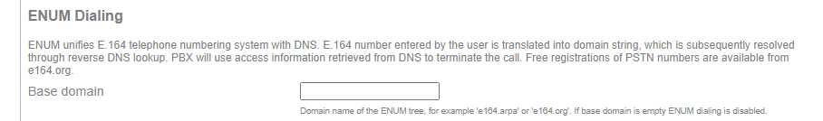
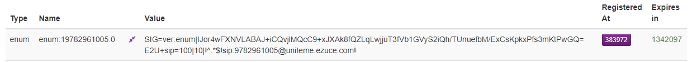
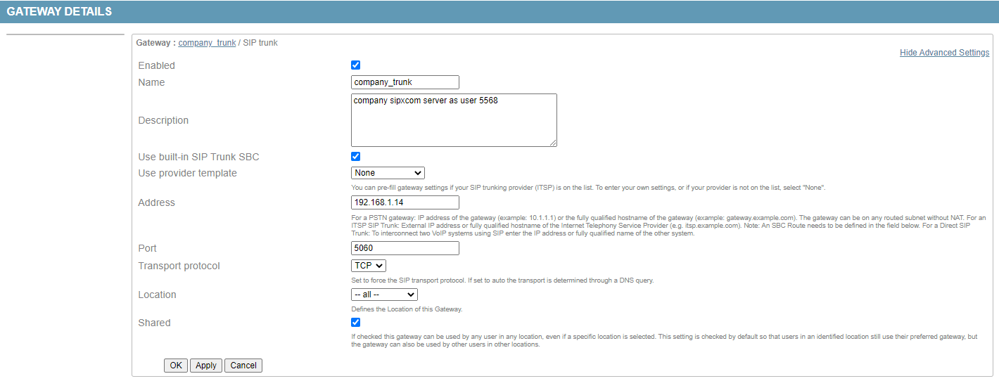
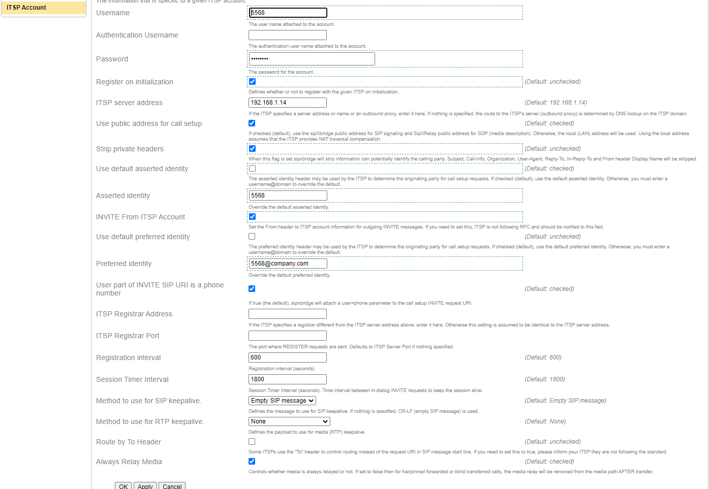
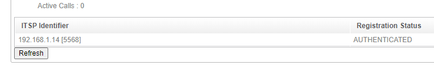
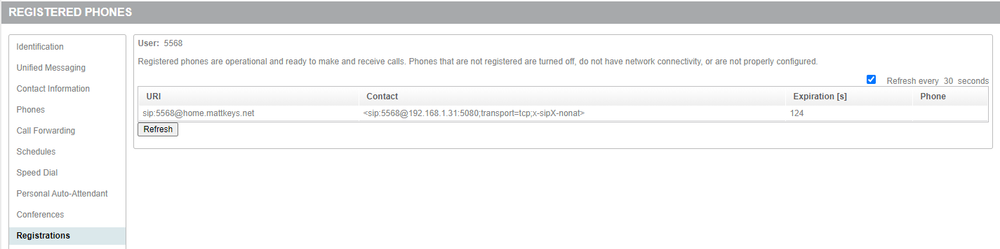
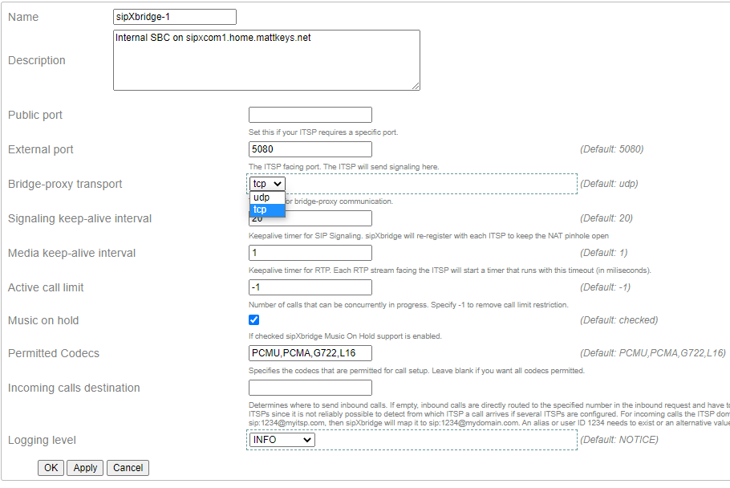
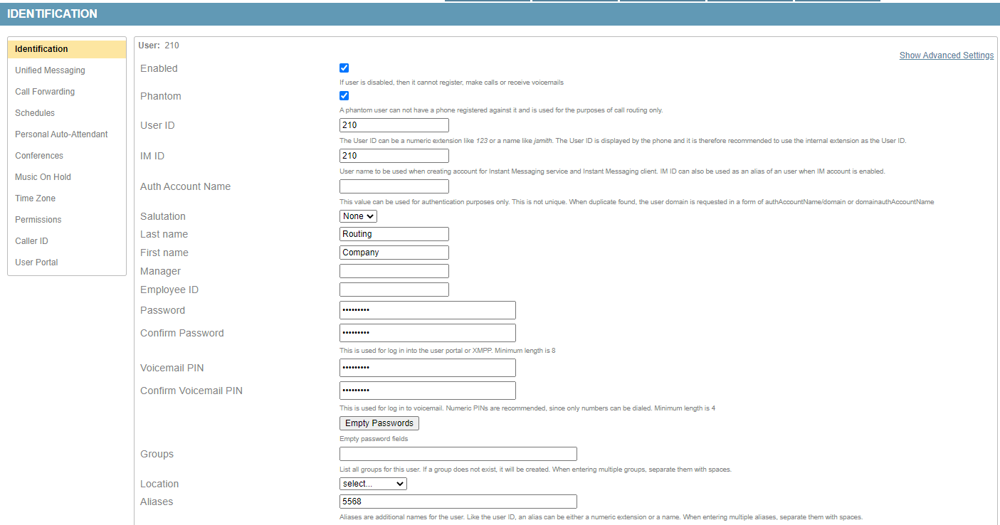
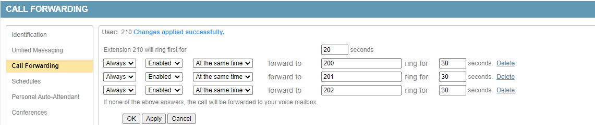
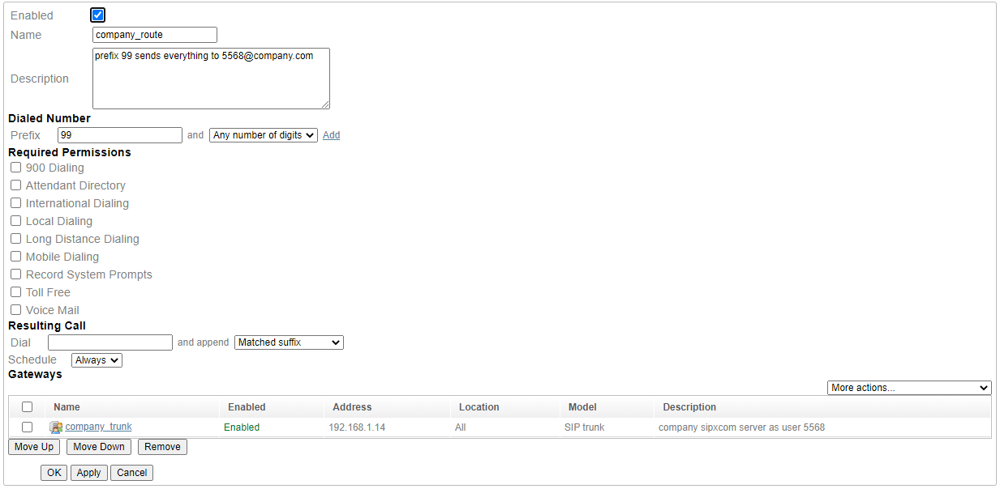

Other / How To¶
Use blockchain DNS for ENUM / E.164 Records¶
The Emercoin blockchain can store DNS records that map a telephone number to a (SIP) domain name ( ENUM / E.164 ). Emercoin named this service ENUMER.
Emercoin is a fork of Bitcoin. The Emercoin NVS (Name Value Storage) is very close to Namecoin, the first fork of Bitcoin. Emercoin is the only blockchain DNS we’re aware of that supports NAPTR records. Please correct us if we’re wrong.
On sipxcom, the ENUM Dialing settings can be found beneath System - Services - SIP Registrar. To use Emercoin ENUMER you only need to point the ‘Base Domain’ to a server running the Emercoin wallet. There used to be a public service (enum.enumer.org) you could point to, but that appears to be down at the time of this writing.
Note
The Base Domain should be input as the FQDN of the server running the Emercoin wallet rather than its IP. You may need to create a custom A record for it in your DNS zone.
The server running the Emercoin wallet should have the DNS service enabled and enum added:
EmerDNSallowed=$enum|.coin|.emc|.lib|.bazar # add Allowed TLDs with ENUM
enumtrust=ver:enum
enumtollfree=@enum:tollfree
Note
The official signing authority (ver:enum) is Emercoin, but you should be able to create your own ver type record and point the enumtrust parameter to that. Otherwise you’ll need Emercoin to verify and sign the record.
As Emercoin is a public blockchain you can use official explorers to view all enum records currently stored. The example below is the (officially signed) record for the eZuce main number.
Use SIP on a Raspberry Pi (BareSIP)¶
BareSIP is a portable and modular SIP User Agent with audio and video support. It is written almost completely in C.
BareSIP is one of few SIP user agents available for a Raspberry Pi.
It has a very impressive feature set! For example, it can use the RPi (CSI interface) camera as a video source. There is also a NoIR version of the RPi camera for low light situations.
Note
A USB camera will work much better than the CSI interface cameras. The CSI cameras require manual focus and probably won’t give you as high of a fps rate as you would get using a USB camera.
The JACK Audio and Opus codec (mono or stereo) support are very handy when working with pro audio gear. For example, pair the RPi with a Pisound hat to terminate two wireless lavalier microphones at 48 kHz sample rate.
BareSIP is available within the Debian (and Raspbian/RaspiOS) 8, 9, and 10 repositories by default:
# sudo apt-cache search baresip
baresip - portable and modular SIP user-agent - metapackage
baresip-core - portable and modular SIP user-agent - core parts
baresip-ffmpeg - portable and modular SIP user-agent - FFmpeg codecs and formats
baresip-gstreamer - portable and modular SIP user-agent - GStreamer pipelines
baresip-gtk - portable and modular SIP user-agent - GTK+ front-end
baresip-x11 - portable and modular SIP user-agent - X11 features
To install baresip on Debian or RPi:
# sudo apt-get install baresip
After installation the configuration, SIP account, and speed dial (contacts) configuration files are beneath the ~/.baresip subdirectory. There are examples of these within the BareSIP documentation.
On the sipxcom side you only need to create a regular (not phantom) user to register as. Use the ‘user ID’ and ‘SIP password’ values as the auth_user and auth_pass account configuration value:
# ;auth_user=username
# ;auth_pass=password
Sipxcom uses TCP transport for phones by default. Configure Baresip to use TCP transport with:
# ;transport=tcp
Build your own stratum 1 NTP server with Raspberry Pi¶
Shopping List¶
- gps hat - https://www.adafruit.com/product/2324
- antenna - https://www.adafruit.com/product/960
- sma adapter - https://www.adafruit.com/product/851
- battery - https://www.adafruit.com/product/380
- rpi3b - https://www.adafruit.com/product/3055
- case - https://www.adafruit.com/product/2258
- 5v 2.5a power adapter - https://www.adafruit.com/product/1995
Configuration¶
In /etc/ntp.conf:
enable kernel
enable pps
enable stats
driftfile /var/lib/ntp/ntp.drift
statistics loopstats peerstats clockstats
filegen loopstats file loopstats type day enable
filegen peerstats file peerstats type day enable
filegen clockstats file clockstats type day enable
# pps ref
server 127.127.28.2 iburst prefer
fudge 127.127.28.2 refid PPS
# gps shared mem
server 127.127.28.0 iburst
fudge 127.127.28.0 refid GPS
# gps peers
peer pi-ntp1.home.mattkeys.net iburst
peer pi-ntp3.home.mattkeys.net iburst
peer pi-ntp4.home.mattkeys.net iburst
server time.nist.gov
# backup pools
pool 0.us.pool.ntp.org iburst
pool 1.us.pool.ntp.org iburst
pool 2.us.pool.ntp.org iburst
pool 3.us.pool.ntp.org iburst
restrict -4 default kod notrap nomodify nopeer limited
restrict -6 default kod notrap nomodify nopeer limited
restrict 127.0.0.1
restrict ::1
restrict source notrap nomodify
In /etc/default/gpsd:
START_DAEMON="true"
USBAUTO="true"
DEVICES="/dev/serial0 /dev/pps0"
GPSD_OPTIONS="-n -G"
In /boot/config.txt append:
# enable GPS PPS
dtoverlay=pps-gpio,gpiopin=4
In /boot/cmdline.txt:
dwc_otg.lpm_enable=0 console=tty1 root=PARTUUID=6e172edd-02 rootfstype=ext4 elevator=deadline fsck.repair=yes rootwait quiet splash plymouth.ignore-serial-consoles
I use this cron script (/etc/cron.custom/bouncegps.sh) to make certain gps has a lock before ntp starts:
/etc/init.d/ntp stop
/etc/init.d/gpsd stop
/usr/sbin/ntpdate 192.168.3.1
/etc/init.d/gpsd start
sleep 1m
/etc/init.d/ntp start
Don’t forget to chmod +x it, then add it in the bottom of /etc/rc.local:
/etc/cron.custom/bouncegps.sh
exit 0
Reboot and you should have it choosing the pps reference within 10 minutes or so:
pi@pi-ntp2:~ $ ntpq -pn
remote refid st t when poll reach delay offset jitter
==============================================================================
*127.127.28.2 .PPS. 0 l 56 64 377 0.000 -0.003 0.001
x127.127.28.0 .GPS. 0 l 55 64 377 0.000 -157.25 3.220
0.us.pool.ntp.o .POOL. 16 p - 64 0 0.000 0.000 0.001
1.us.pool.ntp.o .POOL. 16 p - 64 0 0.000 0.000 0.001
2.us.pool.ntp.o .POOL. 16 p - 64 0 0.000 0.000 0.001
3.us.pool.ntp.o .POOL. 16 p - 64 0 0.000 0.000 0.001
-192.168.3.199 192.168.3.123 2 s 39 64 376 0.839 0.055 0.050
+192.168.3.107 .PPS. 1 s 56 64 376 0.613 -0.007 0.012
+192.168.3.123 .PPS. 1 s 58 64 376 0.610 -0.006 0.011
-132.163.96.2 .NIST. 1 u 1 64 377 54.556 1.749 0.366
Interconnect two disparate sipxcom servers¶
You can connect disparate sipxcom servers (different SIP domains) by creating a SIP trunk between them. The SIP trunk operates similar to a phone registration, authenticating with user credentials when required (407 Proxy Authentication Required).
Example Scenario¶
Alice is employed by company that uses sipxcom as their PBX.
Registration to her employer sipxcom server is available over the public internet. Hopefully it is protected by a SBC. She can register any SIP phones at her house to the employer sipxcom server, and place calls without any problems.
That’s great, but Alice personally owns all the phones at her house. She doesn’t want her employer to manage the configuration and firmware of her phones, or allow the employer to use things like intercom on the phones inside her home. To ensure that, she would like to register all the phones in her home to a sipxcom server running on her private network rather than directly to her employer sipxcom server. This will allow Alice to remain in full control of the phones in her home.
Her home sipxcom server is not exposed to the public internet. It is protected by a good quality NAT router/firewall. She’s certain it doesn’t have any SIP ALGs enabled, and it has handy features like packet capture in the event she needs to troubleshoot the connection to her employer. She could also collect a sipxcom snapshot if needed.
As it is similar to a phone registration, port forwarding is not required on Alice’s NAT firewall/router.
She has three SIP phones on her private network, one in each bedroom.
On her employer sipxcom server, Alice is configured as a normal user (not phantom) on extension 5568.
On her home sipxcom server, Alice has configured 3 normal users (not phantom). 200 for the master bedroom, 201 for the first guest bedroom, and 202 in the second guest bedroom. She has one phone assigned to each user. All three are successfully registered when she checks Diagnostics - Registrations. She can place calls between 200 to 201 and 202 without any problems, and they to her.
Alice wants all three phones (200, 201, 202) to ring at the same time when someone calls her extension at work, 5568. This should allow her to answer a incoming call while she is in any room.
Configuration¶
On her home sipxcom server, Alice logs in as superadmin and navigates to Devices - Gateways.
Next she clicks the ‘Add new gateway’ drop down and selects SIP Trunk.
She enters her employer sipxcom server IP address or SIP domain name in the Address field.
Note
The DNS A record and SIP SRV records must be available if you specified by SIP domain.
She enters 5060 (just like a phone) in the Port field, and specifies TCP transport. She specified TCP transport because it is more reliable and doesn’t have the size limitations that UDP has (1500 bytes).
Note
If you use the IP rather than SIP domain name, verify the employer sipxcom server has that IP listed in System - Settings - Domain under Domain Aliases. If there are multiple servers running proxy/reg, all the proxy/reg server IPs should be listed in the domain aliases as well.
She clicks apply to save, then navigates to the “ITSP Account” tab to enter her company user id (5568) and SIP password cedentials the trunk should authenticate with.

She clicks Apply to save again.
There are a few more settings under Show Advanced Settings she needs to tweak:

- She needs to check Strip private headers to remove any local user tags within the SIP messaging towards her employer sipxcom server.
- She needs to uncheck Use default asserted identity and set 5568 as the Asserted Identity for any SIP messaging to the employer sipxcom server.
- She needs to check INVITE from ITSP Account, so the From: will always be 5568 to her employer server. There will be no caller ID or user ID rewrites (the employer server should do that).
- She also sets the Preferred identity as 5568@company.com, where company.com is the employer SIP domain.
After clicking Apply to save, Alice then checks Diagnostics - SIP Trunk statistics on her sipxcom server to verify the SIP Trunk registration was successful against the employer sipxcom.
If Alice has access to the employer sipxcom server, she could also verify on the employer sipxcom beneath Users - 5568 - Registrations. The trunk registration should be listed, and there should be ‘transport=tcp’ specified in the Contact field of the registration.
Note
Don’t forget to change system - services - SIP trunk - sipXbridge-1 - Bridge-proxy transport to TCP from default UDP on both sipxcom servers to keep transport consistent.
TCP transport is used by default for phone registrations to sipxcom (proxy/reg). This setting will help prevent any udp/tcp transport changes that could break signaling.
Any inbound INVITEs sent from the employer sipxcom will be To: <sip:5568, so Alice needs to terminate 5568 on her sipxcom server (similar to a DID). The SIP trunk connection alone does not do this.
On her home sipxcom server, Alice creates a phantom user 210 with 5568 in the Alias field for this purpose.
Next Alice adds Call Forwards under phantom user 210 for ‘at the same time’ to 200, 201, and 202 – the three bedrooms. She tests this by asking a co-worker registered on the company server to dial 5568, which is successful. She might test again through the PSTN by calling the company with her mobile phone, then dialing her extension 5568 from the company AA.
The final piece is outbound dialing. To do that Alice needs to create a dial plan entry on her sipxcom server at home. She navigates to System - Dialing - Dial Plans, then clicks ‘Add new rule’ and selects a ‘Custom’ plan. She configures a prefix of 99 and any number of digits to dial the entire matched suffix through the SIP trunk.
After clicking Apply to save, Alice can test this by dialing the prefix of 99 and any extension on the company server. For example if a co-worker is at extension 5515 she could dial 995515. To test outbound to the PSTN through that trunk, she would dial it prefixed with 99 as well, like 994235551212.
In her test calls she should verify there is bidirectional audio after the call is established, and that the call remains established longer than 30 seconds.